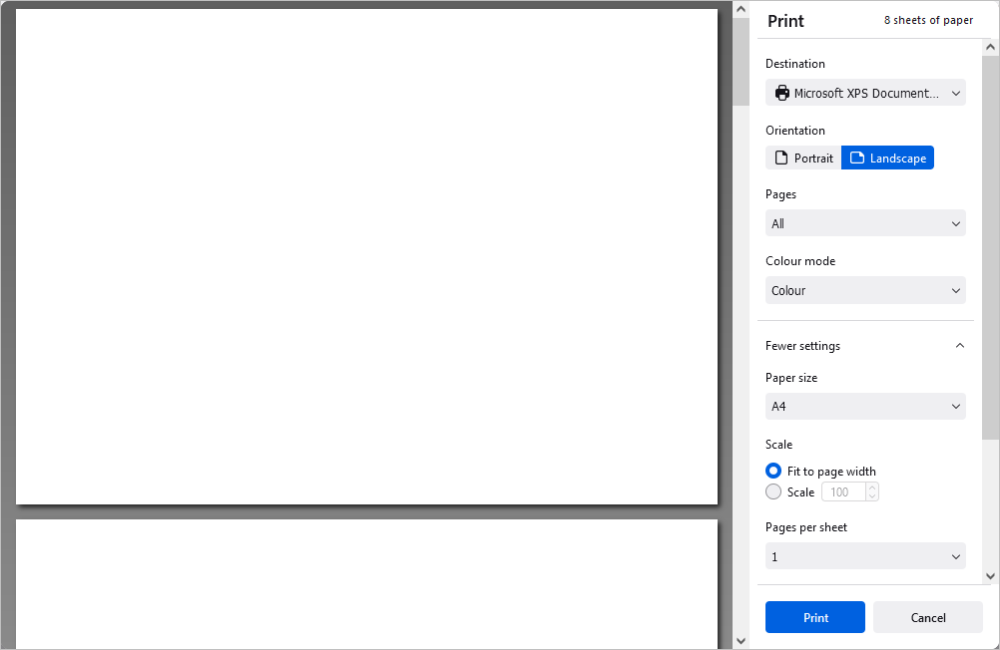

Sačuvajte/odštampajte/preuzmite vašu prezentaciju
Sačuvajte
Podrazumevano, onlajn Presentation Editor automatski čuva vaš fajl na svake 2 sekunde dok radite na njemu, čime se sprečava gubitak podataka u slučaju neočekivanog zatvaranja programa. Ako zajednički uređujete fajl u Fast režimu, tajmer zahteva ažuriranja 25 puta u sekundi i čuva izmene ako ih ima. Kada se fajl zajednički uređuje u Strict režimu, izmene se automatski čuvaju u intervalima od 10 minuta. Ako je potrebno, možete lako izabrati željeni režim zajedničkog uređivanja ili onemogućiti funkciju Autosave na stranici Advanced Settings.
Da biste ručno sačuvali vašu prezentaciju u trenutnom formatu i na trenutnoj lokaciji,
- pritisnite ikonu Save sa leve strane zaglavlja editora, ili
- koristite kombinaciju tastera Ctrl+S, ili
- kliknite na karticu File na gornjoj traci sa alatkama i izaberite opciju Save.
U desktop verziji, da biste sprečili gubitak podataka u slučaju neočekivanog zatvaranja programa, možete uključiti opciju Autorecover na stranici Advanced Settings.
U desktop verziji, možete sačuvati vašu prezentaciju pod drugim imenom, na novoj lokaciji ili u drugom formatu,
- kliknite na karticu File na gornjoj traci sa alatkama,
- izaberite opciju Save as,
- izaberite jedan od dostupnih formata u skladu sa vašim potrebama: PPTX, ODP, PDF, PDF/A, PNG, JPG. Takođe možete izabrati opciju Presentation template (POTX ili OTP).
Preuzmite
U onlajn verziji, možete preuzeti završnu prezentaciju na hard disk vašeg računara,
- kliknite na karticu File na gornjoj traci sa alatkama,
- izaberite opciju Download as,
- izaberite jedan od dostupnih formata u skladu sa vašim potrebama: PPTX, PDF, ODP, POTX, PDF/A, OTP, PNG, JPG.
Sačuvajte kopiju
U onlajn verziji, možete sačuvati kopiju fajla na vašem portalu,
- kliknite na karticu File na gornjoj traci sa alatkama,
- izaberite opciju Save Copy as,
- izaberite jedan od dostupnih formata u skladu sa vašim potrebama: PPTX, PDF, ODP, POTX, PDF/A, OTP, PNG, JPG.
- izaberite lokaciju fajla na portalu i pritisnite Save.
Odštampajte
Da biste odštampali trenutnu prezentaciju,
- kliknite na ikonu Print sa leve strane zaglavlja editora, ili
- koristite kombinaciju tastera Ctrl+P, ili
- kliknite na karticu File na gornjoj traci sa alatkama i izaberite opciju Print.

Podesite sledeće parametre u prozoru Print koji se otvori:
- Destination – izaberite odredište štampe, npr. Save to PDF, Microsoft XPS Document Writer, Microsoft Print to PDF, Fax itd.
- Orientation – izaberite Portrait za vertikalno ili Landscape za horizontalno štampanje.
- Pages – izaberite opciju All, Current, Odd, Even ili Custom. U poslednjem slučaju unesite brojeve stranica ručno.
-
Colour mode – izaberite da li želite štampanje u Colour ili Black and white režimu. Ova opcija je dostupna kada je kao Destination izabran Microsoft XPS Document Writer. Za Fax je režim boja podrazumevano black and white.
Kliknite na natpis More settings da biste otvorili napredna podešavanja.
- Paper size – izaberite veličinu papira sa liste ili postavite prilagođenu.
- Scale – podesite razmeru štampanja; možete prilagoditi širini stranice ili ručno podesiti razmeru.
- Pages per sheet – podesite broj stranica po listu (npr. dve, šest, devet).
- Margins – podesite margine stranice (podrazumevane ili prilagođene).
- Options – uključite ili isključite štampanje zaglavlja i podnožja.
- Print using the system dialogue – otvorite sistemski dijalog za podešavanje štampe.
Moguće je i štampanje izabranih slajdova korišćenjem opcije Print Selection iz kontekstnog menija u režimima Edit i View (desni klik miša na izabrane slajdove i izbor opcije Print selection).
U onlajn verziji biće generisan PDF fajl na osnovu vaše prezentacije. Možete ga otvoriti i odštampati ili sačuvati na hard disk računara ili prenosivi medij za kasnije štampanje. Neki pregledači (npr. Chrome i Opera) podržavaju direktno štampanje.
Opcije štampanja u desktop verziji su sledeće: izaberite štampač sa liste Printer, izaberite Print range, unesite Slides i broj Copies, izaberite Print sides, Paper size i Header/footer settings. Za dodatna podešavanja koristite sistemski dijalog štampe putem opcije Print using the system dialog. Proces završite klikom na Print ili Print to PDF. Dugme Quick print na gornjoj traci sa alatkama omogućava štampanje koristeći poslednji ili podrazumevani štampač.